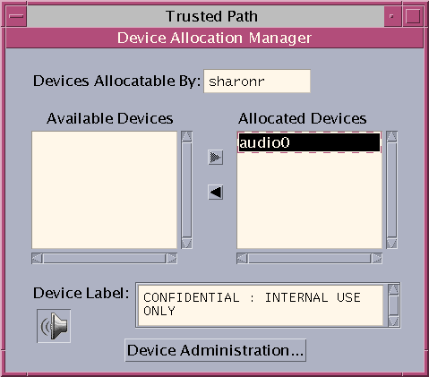
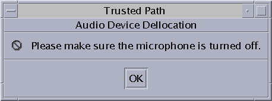
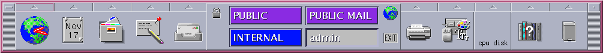
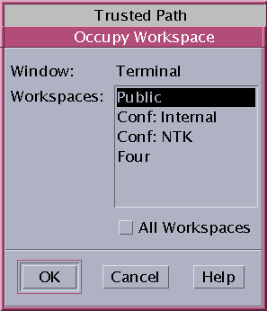
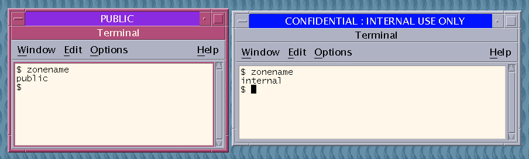
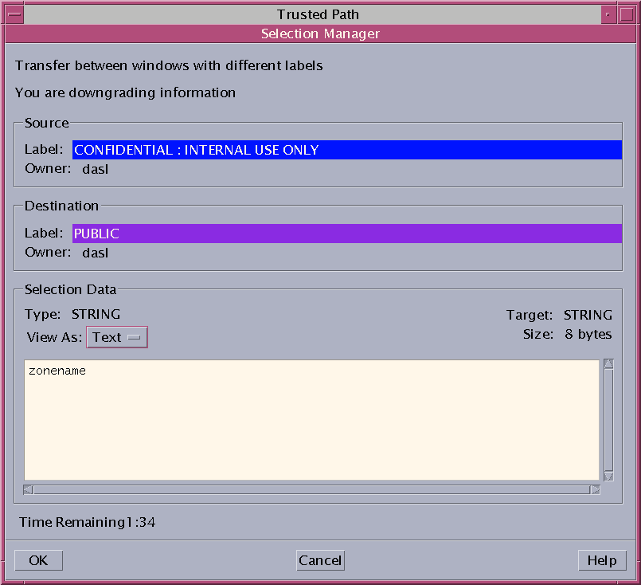
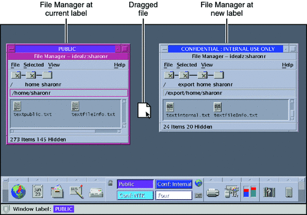

Performing Trusted Actions
The following security-related tasks require the trusted path.
Caution - If the trusted symbol is missing when you are attempting a security-related action,
contact your security administrator at once. The problem on your system could be
serious.
How to Change Your Password in Trusted Extensions
Unlike the Solaris OS, Trusted Extensions provides a GUI for changing your password.
The GUI grabs the pointer until the password operation is completed. To stop
a process that has grabbed the pointer, see How to Regain Control of the Desktop’s Current Focus in Solaris Trusted Extensions Administrator’s Procedures.
- Choose Change Password from the Trusted Path menu.
For the Change password menu item in Trusted GNOME, click Trusted Path in the
trusted stripe.
The following figure shows the Trusted Path menu in Trusted CDE.

- Type your current password.
This action confirms that you are the legitimate user for this user name.
For security reasons, the password is not displayed as you type.
Caution - When you type your password, make sure that the cursor is over the
Change Password dialog box and that the trusted symbol is displayed. If the
cursor is not over the dialog box, you might inadvertently type your
password into a different window where the password could be seen by another
user. If the trusted symbol is not displayed, then someone might be attempting
to steal your password. Contact your security administrator at once.
- Type the new password.
- Confirm the password by retyping it.
How to Log In at a Different Label
The label of the first workspace that appears in subsequent login sessions after
the first login can be set to any label within your label
range.
Users can configure the startup session characteristics for every label at which they
log in..
Before You Begin
You must be logged in to a multilevel session.
- Create workspaces at every label.
For details, see How to Add a Workspace at a Particular Label.
- Configure each workspace as you want the workspace to appear.
- Go to the workspace that you want to see when you log
in.
- Save this current workspace.
For details, see How to Perform Some Common Desktop Tasks in Trusted Extensions.
How to Allocate a Device in Trusted Extensions
The Allocate Device menu item enables you to mount and allocate a
device for your exclusive use. If you try to use a device without
allocating it, you get the error message “Permission Denied”.
Before You Begin
You must be authorized to allocate a device.
- Choose Allocate Device from the Trusted Path menu
Or, in Trusted CDE, open the Device Allocation Manager from the Tools subpanel
in the Front Panel.
Figure 3-5 Device Allocation Icon in Trusted CDE

The Device Allocation Manager is displayed. In Solaris Trusted Extensions (GNOME), this GUI
is called the Device Manager.
Figure 3-6 Device Allocation Manager

- Double-click the device that you want to use.
The devices that you are permitted to allocate at your current label appear
under Available Devices:.
audion – Indicates a microphone and speaker
cdromn – Indicates a CD-ROM drive
floppyn – Indicates a diskette drive
mag_tapen – Indicates a tape drive (streaming)
rmdiskn – Indicates a removable disk, such as a JAZ or ZIP drive, or USB hot-pluggable media
- Select the device.
Move the device from the Available Devices list to the Allocated Devices list.
- Double-click the device name in the Available Devices list.
- Or, select the device and click the Allocate button that points to the
right.
This step starts the clean script. The clean script ensures that no data
from other transactions remains on the media.
Note that the label of the current workspace is applied to the
device. Any data transferred to or from the device's media must be dominated
by this label.
- Follow the instructions.
The instructions ensure that the media has the correct label. Then, the device
is mounted. The device name now appears in the Allocated Devices list. This
device is now allocated for your exclusive use.
Example 3-3 Loading Removable Media to Read a File System
In this example, a user wants to load information onto her system
from a CD-ROM that is labeled SECRET. She is authorized to allocate the CD-ROM.
First, she creates a workspace at the label SECRET. In this workspace, she
opens the Device Allocation Manager, and allocates the CD-ROM drive. Then, she inserts
the CD and responds yes to the mount query.
The software mounts the CD and the File Manager appears. The current directory
is set to the mount point.
Example 3-4 Loading Removable Media to Format the Media
In this example, a user wants to format a diskette to contain
SECRET data. She is authorized to allocate the CD-ROM drive.
First, she creates a workspace at the label SECRET. In this workspace, she
opens the Device Allocation Manager, and allocates the CD-ROM drive. Then, she inserts
the CD and responds no to the mount query. The CD can now
be formatted.
Example 3-5 Allocating an Audio Device
In this example, a user allocates the audio device on her system.
When she moves the audio device to the Allocated Device list, the following
message appears:

The device is allocated at the label Confidential : Internal Use Only. She views the label
when she selects the device in the Allocated Device list.

When the user is finished with the audio device, she deallocates it. The
system reminds her to turn off the microphone.

Troubleshooting
If the device that you want to use does not appear in the
list, check with your administrator. The device could be in an error state
or in use by someone else. Or, you might not be authorized to
use the device.
If you switch to a different role workspace or to a workspace
at a different label, the allocated device cannot work at that label. To
use the device at the new label, you need to deallocate the device
at the initial label, and then allocate the device at the new label.
In Trusted CDE, when you use the Occupy Workspace command from the window
menu to move the Device Allocation Manager to the new workspace, the Available
and Allocated Devices lists change to reflect the correct context. The Device Manager
in Trusted GNOME works similarly when you move the GUI to a workspace
at a different label.
If a File Manager or File Browser window does not appear, open the
window manually, then navigate to the root directory, /. In this directory,
navigate to the allocated device to see its contents.
How to Deallocate a Device in Trusted Extensions
- Deallocate the device.
- Go to the workspace where the Device Allocation Manager is displayed.
- Move the device to be deallocated from the list of allocated devices.
- Remove the media.
- Click OK in the Deallocation dialog box.
The device is now available for use by another authorized user.
How to Assume a Role in Trusted Extensions
Unlike the Solaris OS, Trusted Extensions provides a GUI for assuming a
role.
- Open the Trusted Path menu.
- In Solaris Trusted Extensions (CDE), click the center of the Front Panel.
If you have been assigned a role by the security administrator, the Trusted
Path menu includes the Assume rolename Role menu item.
Choose Assume rolename Role.
- In Solaris Trusted Extensions (GNOME), click your user name at the right of
the trusted symbol.
Choose the role name from the menu.
- Type the role password and press Return.
This action confirms that you can legitimately assume this role. For security reasons, the
password is not displayed as you type.
Caution - When you type your password, make sure that the cursor is over the
Change Password dialog box and that the trusted symbol is displayed. If the
cursor is not over the dialog box, you might inadvertently type your
password into a different window where the password could be seen by another
user. If the trusted symbol is not displayed, then someone might be attempting
to steal your password. Contact your security administrator at once.
After the role password is accepted, the software places you in a
role workspace. In Trusted GNOME, the current workspace becomes the role workspace. In Trusted
CDE, a new workspace is created for the role. You are in the
global zone. You can perform the tasks that are permitted by the rights
profiles in your role.
How to Change the Label of a Workspace
The ability to set workspace labels in Trusted Extensions provides a convenient means
of working at different labels within the same session.
Use this procedure to work in the same workspace at a different
label. To create a workspace at a different label, see How to Add a Workspace at a Particular Label.
Before You Begin
You must be logged in to a multilevel session.
- Click mouse button 3 over the workspace button.
- From the menu, choose Change Workspace Label.
- Choose a label from the label builder.
The workspace label is changed to the new label. Windows and applications that
were invoked before the label change continue to run at the previous label.
The trusted stripe indicates the new label. In a system where labels are
color-coded, new windows are marked with the new color. In Trusted CDE, the
workspace button is color-coded.
How to Add a Workspace at a Particular Label
The ability to set workspace labels in Trusted Extensions provides a convenient means
of working at different labels within the same session. On both desktops, you can
add a workspace at your minimum label. In Trusted CDE, you can
add a workspace at the label of an existing workspace.
Tip - In Trusted CDE, rename each workspace button to reflect the label of the
workspace.
To change the label of the current workspace, see How to Change the Label of a Workspace.
Before You Begin
You must be logged in to a multilevel session.
- In Trusted GNOME, to create a workspace at your minimum label, do
the following:
- Click mouse button 3 over a workspace box in the panel display.
- From the menu, choose Preferences.
- Increase the number in the Number of Workspaces field.
The new workspaces are created at your minimum label. You can also use
this dialog box to name the workspaces.
Note - In Trusted GNOME, to add a workspace at a different label, you
select a workspace box and change its label. For details, see How to Change the Label of a Workspace.
- In Trusted CDE, to create a workspace at your minimum label,
do the following:
- Click mouse button 3 over the Workspace Switch Area.
- From the menu, choose Add Workspace.
The workspace is created at your minimum label.
- (Optional) Rename the workspace.
- In Trusted CDE, to create a workspace at the label of
an existing workspace, do the following:
- Click mouse button 3 over the workspace button.
- From the menu, choose Add Workspace.
The workspace is created at the label of the workspace button.
How to Switch to a Workspace at a Different Label
- In Trusted CDE, click the workspace switch at that label.
Figure 3-7 Front Panel With Switches at Different Labels

- In Trusted GNOME, click the workspace box on the panel display.
You are now in that labeled workspace.
Troubleshooting
If you are logged in to a single-level session, you must log
out to work at a different label. Then, log in at the desired
label. If you are permitted, you can also log in to a multilevel
session.
How to Move a Window to a Different Workspace
Windows that are moved to a different workspace retain their original label. Any
actions that are done in those windows are done at the label
of the window, not at the label of the containing workspace. Moving a
window is useful when you want to compare information. You might also want
to use applications at different labels without moving between workspaces.
- In Trusted CDE, use the Occupy Workspace menu to move a window
to a different workspace.
- From the application's window menu, choose Occupy Workspace.
Figure 3-8 Selecting Occupy Workspace

- Choose a workspace at a different label, then click OK.
This action moves the application to a workspace that has a different
label. Note that the Occupy Workspace dialog box has the label Trusted Path.
This label indicates that occupying a workspace affects the trusted computing base.
The following figure shows two terminal windows at different labels in one workspace.
Figure 3-9 Differently Labeled Windows in One Workspace

- In Trusted GNOME, in the panel display, drag the window from its original
workspace box to a different workspace box.
The dragged window now appears in the second workspace.
How to Determine the Label of a File
Usually, the label of a file is obvious. However, if you are
allowed to view files at a lower label than your current workspace, the
label of a file might not be obvious. In particular, the label of
a file can be different from the label of the File Manager.
- In Trusted CDE, use the File Manager to determine the label of
the file.
- In Trusted GNOME, use the File Browser.
Tip - You can also use the Query Label menu item from the Trusted
Path menu.
How to Move Data Between Labels
As on a Solaris system, you can move data between windows in
Trusted Extensions. However, the data must be at the same label. When you
transfer information between windows with different labels, you are upgrading or downgrading the sensitivity
of that information.
Before You Begin
Your site's security policy must permit this type of transfer, the containing zone
must permit relabeling, and you must be authorized to move data between labels.
Therefore, your administrator must have completed the following tasks:
You must be logged in to a multilevel session.
- Create workspaces at both labels.
For details, see How to Add a Workspace at a Particular Label.
- Confirm the label of the source file.
For details, see How to Determine the Label of a File.
- Move the window with the source information to a workspace at the target
label.
For details, see How to Move a Window to a Different Workspace. The following figure shows two editors at different labels
in the same workspace.
Figure 3-10 Differently Labeled Applications in One Workspace

- Highlight the information to be moved, and paste the selection in the target
window.
The Selection Manager Confirmation dialog box is displayed.
- Review the Selection Manager Confirmation dialog box.
This dialog box:
Describes why confirmation of the transaction is needed.
Identifies the label and the owner of the source file.
Identifies the label and the owner of the destination file.
Identifies the type of data that was selected for transfer, the type of the target file, and the size of the data in bytes. By default, the selected data is visible in text format.
Indicates the time that remains for you to complete the transaction. The amount of time and the use of the timer depends on your site's configuration.
Figure 3-11 Selection Manager Confirmation Dialog Box

- (Optional) In the View As menu, choose how to view the source information.
- Confirm that you want the label of the data to change.
- Click Cancel to stop the transaction.
- Otherwise, click OK.
How to Move Files Between Labels in Trusted CDE
As on a standard Solaris system, you can move files in Trusted
Extensions. When you move a file to a different label, you are upgrading
or downgrading the sensitivity of the information that is in the file.
Before You Begin
Your site's security policy must permit this type of transfer, the containing zone
must permit relabeling, and you must be authorized to move files between labels.
Therefore, your administrator must have completed the following tasks:
You must be logged in to a multilevel session in Trusted CDE.
The file that you want to move must be closed. Verify that no
one else is using this file.
- Create workspaces at both labels.
For details, see How to Add a Workspace at a Particular Label.
- Open File Managers at both labels.
For details, see How to View Your Files in a Labeled Workspace.
- In the source File Manager, navigate to the file whose label is to
change.
- In the target File Manager, navigate to the file's new directory.
- Move the File Managers into one workspace.
For details, see How to Move a Window to a Different Workspace.
Figure 3-12 Differently Labeled File Managers in One Workspace

- Drag and drop the file to the target directory.
Figure 3-13 Dragging a File Between File Managers at Different Labels
The File Manager Confirmation dialog box is displayed, as shown in Figure 3-14.
This dialog box is similar to the Selection Manager Confirmation dialog box, but
does not include a timer. This dialog box:
Describes why confirmation of the transaction is needed.
Identifies the label and the owner of the source file.
Identifies the label and the owner of the destination file.
Identifies the type of data that was selected for transfer, the type of the target file, and the size of the data in bytes.
Figure 3-14 File Manager Confirmation Dialog Box

- Confirm that you want the label of the file to change.
- Click Cancel to stop the transaction.
- Click Apply to move the file to the new label.
Example 3-6 Linking a File to a Different Label
The linking of a file to another label is useful when you
want to view a file with a lower label at a higher label.
The file is writable only at the lower label.
To link a file, the user presses Shift-Control while dragging the file icon
from the source File Manager to the target File Manager. Then, the
user confirms the link, or cancels the operation.
Troubleshooting
If your system is not configured to permit the upgrading or downgrading of
labels, a dialog box that states that the transfer is not authorized is
displayed. Check with your administrator.